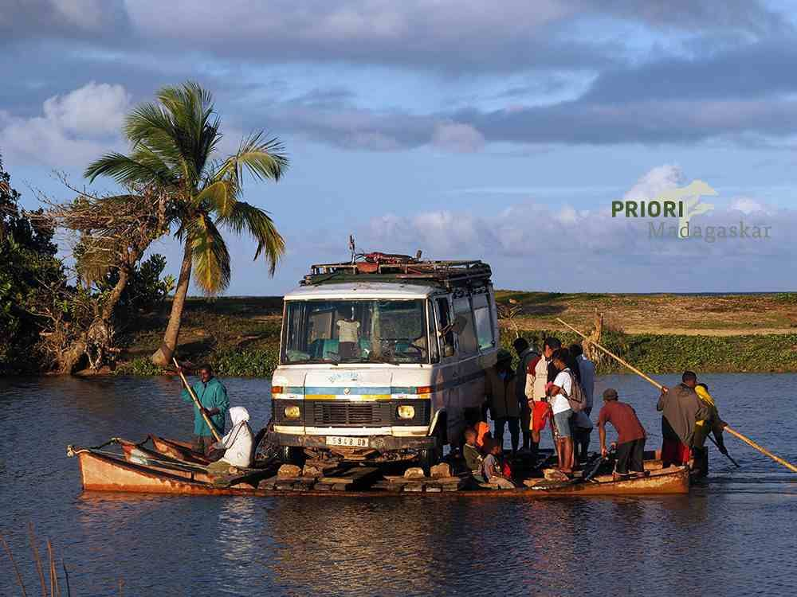

La SAVA, est une région située au nord-est de Madagascar, identifiée par tous les Malgaches par les initiales de ses principales villes de district Sambava, Antalaha, Vohémar et Andapa.
Elle est aussi appelée le triangle de la vanille. Un peu oubliée, mais si variée… C’est une région verte, tropicale, qui abrite la plus importante zone de culture de vanille au monde.
SAVA : où la vanille réveille vos sens !
 Chaque pas dans la SAVA vous parle de vanille… Le nord-est de Madagascar respire le parfum des gousses de vanille et tout un chacun se préoccupe de cet or noir tropical tout au long de l’année : entretien des plantations, récolte, transformation. Après une préparation incroyablement méticuleuse, les gousses brun-noir et transpirantes de Madagascar s’élancent à l’assaut de tous les continents et entrent dans les préparations culinaires de tous niveaux.
Chaque pas dans la SAVA vous parle de vanille… Le nord-est de Madagascar respire le parfum des gousses de vanille et tout un chacun se préoccupe de cet or noir tropical tout au long de l’année : entretien des plantations, récolte, transformation. Après une préparation incroyablement méticuleuse, les gousses brun-noir et transpirantes de Madagascar s’élancent à l’assaut de tous les continents et entrent dans les préparations culinaires de tous niveaux.
Vert profond de la nature, couleurs denses et isolement total
Le parc national de Marojejy se love au milieu de la SAVA, doucement entouré de ses collines. La montée –presque une ascension – jusqu’au sommet de 2132 mètres – l’un des plus hauts de Madagascar – est aussi bien un voyage à travers diverses zones de végétation qu’une rencontre avec l’histoire de notre planète. Photographes et amoureux des animaux en ont pour leur argent, aussi bien que les amateurs de plantes et de randonnées pédestres. Le Marojejy, souvent enfoui dans les nuages, conserve ses secrets bien cachés sous son manteau végétal vert intense, et de nombreuses espèces endémiques restent encore à découvrir…
De petites villes pleines de charme
Les petites villes d’Andapa et d’Antalaha sont de petites perles de l’Océan Indien. Isolées et tranquilles, à l’écart de circuits habituels de Madagascar, elles offrent aux voyageurs l’occasion de s’attarder, et de prendre le rythme de ses habitants. Prendre le temps d’observer la vie aux abords de la plage, au marché, dans les rues… Place à la contemplation… Et pourtant, des surprises nous attendent toujours.
Dans l’arrière-pays, une rivière recueille l’eau des vallées et ses flancs sont couverts de plantations de vanille, de litchi, de café et de poivre. Ici aussi, la flore se camoufle sous mille nuances de couleurs et nous invitent à la flânerie…

Au cœur de Madagascar, la région très isolée qu’est la SAVA vaut vraiment le détour. Mais le voyage dans cette zone doit être soigneusement planifié, et le temps nécessaire doit absolument faire partie de vos bagages… En effet, l’horaire des vols au départ d’Antananarivo, la capitale malgache, est aussi stable que la courbe boursière, et il faut donc absolument prévoir une large réserve de temps . Il n’existe pas de liaisons maritimes sérieuses et la seule route d’accès par le Sud est… disons… carrément inoubliable !Vous pouvez télécharger ici le flyer parfumé, et contactez-nous pour une description détaillée de cet itinéraire ou pour toute autre question sur priori-voyages@netplus.ch. A bientôt !